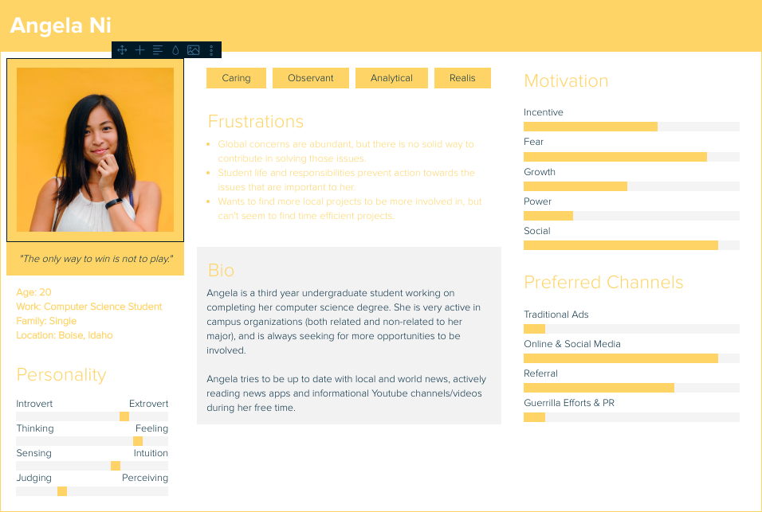

The process of creating the personas (see below) was helpful in the development of website intention. Of course, it also highlighted the limited scope (in terms of audience) that I had unintentionally set for myself. Thus, the persona research really helped expand the issues that I want to highlight with my website. However, it was also a challenge in creating such personas since it forced me to break my original thinking pattern.
User Personas
